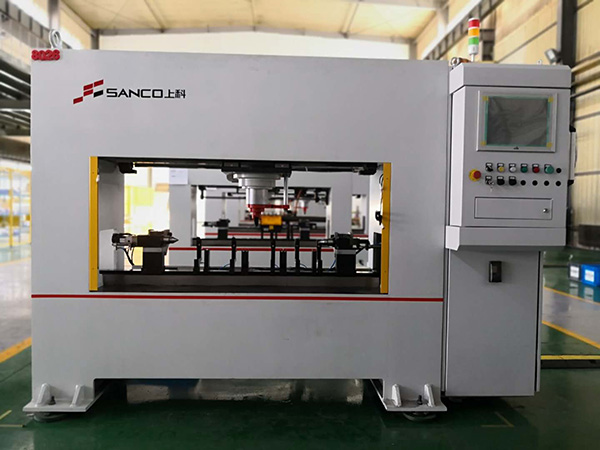

发布时间：2019-09-12 点击量：203
校直机在工作的进程中需要将工件放在自动校直机工作台上的定位支承位置，并且按下自动启动按钮之后，校直机即进入自动校直循环进程：先由气缸履行直线运动动作带动两边反转前进(若工件采用外圆定位则气缸履行直线运动动作带动两边驱动冲突轮下降)，夹紧并定位工件丈量基准;一起由伺服调速电机带动减速器反转并驱动工件和脉冲编码器旋转。
校直机的触摸方式的丈量设备检测工件被测点位置的外表跳动情况(TIR值)，并由带有小信号放大作用的差动变压器式位移传感器将检测的数据与脉冲编码器收集的相位数据一起传输给计算机数据收集体系，计算机依据工件的曲折情况检测数据经过测控体系加工处理后给出校直批改控制参量，然后由PLC控制伺服调速电机驱动反转(或冲突轮)使工件的大曲折点方向竖直向上，液压缸履行直线动作驱动压头下压工件，完结一次校直循环。
校直机的可编程控制中心是校直机的关键组成部分。校直机冗杂有序的动作都是在它的程序控制下履行完结的。PLC与计算机处理体系彼此通讯并协调控制各履行部件有序的进行夹紧、丈量、校直部位选择、加压实施批改等动作。
校直机是专门用于棒材的矫直设备，与其他校直机相比的话，尽管用处各有不同，但它们的设备和调试基本上都是差不多的。相同要求设备前准备充分，设备时慎重操作，设备后注意调试等。
校直机设备前，需要查看其整机部件是否齐全，并且各自的位置是否可靠。如果棒料校直机是靠墙或其他建筑物设备的话，应该要留有的间隙，为了便于设备后期的维修保养，一起也是为了便利资料运送。